Expert LLM Knowledge Base
What This Is
The core insight: Stop treating LLMs like magic boxes. Treat them like senior team members — they need clear context, explicit boundaries, and feedback loops before they can do their best work. Most people skip that setup and then blame the model when output is inconsistent.
This page documents the mental models, system prompts, and workflow patterns I've developed working directly inside Claude Code — Anthropic's agentic CLI environment. That's the primary focus, because it's where I've gotten the most reliable, production-quality results. The core logic transfers to other LLMs (GPT-4, Gemini, etc.) even if the specific commands differ.
Everything below is drawn from real projects: the patterns that held up, the shortcuts worth memorizing, and the self-correction loops that reduce how often you need to intervene. Not theory — accumulated experience.
Quick Navigation
Paste the "Starting Projects" prompt on the left into Claude before every session. Pin the Critical Shortcuts. Then explore the knowledge base cards below.
Drop this in at the start of every session — it forces Claude to read your CLAUDE.md, use Plan Mode before touching code, and stop rather than guess.
Setting Up Claude Code the Right Way
Most people install Claude Code and start typing. It produces results — but each session starts cold. Claude doesn't know your environment, your rules, what you tried last week, or why a particular approach was abandoned. You end up re-explaining the same context, watching it suggest things you already ruled out, and manually catching regressions that a better setup would have prevented.
The six patterns below fix that. They shift Claude from a one-session tool into a compounding system — one where every decision you document, every rule you write, and every workflow you define makes the next project faster and more reliable than the last. The context you build in project A carries forward into project B. Global skills you write once are available everywhere. Memory files mean you never explain the same thing twice.
During conversations, the habits that matter most: write decisions to memory the moment they're made (not at session end — sessions close unexpectedly), use /compact before switching sub-tasks to keep Claude oriented, and if Claude suggests something you've already solved — stop, don't correct it manually, update the memory so it never happens again. Corrections that stay in chat die with the session. Corrections that go into memory become permanent rules.
The goal isn't a perfect first session. It's building infrastructure so every session after that is better than the one before.
Global CLAUDE.md: Your Persistent Rules Engine
SETUP
~/.claude/CLAUDE.md (Windows: %APPDATA%\Claude\CLAUDE.md) applies to every project, every session. Claude reads it before anything else. Put in it: your OS and shell, universal "never do X" rules, where API keys live, tool preferences. One rule written here follows you across every project forever — no re-explaining.
Project CLAUDE.md: Scoped Context That Stacks
SETUP
Each project gets its own CLAUDE.md in the root. It stacks on top of global — project rules win where they conflict. Document: what the project is (one paragraph), the active workflow (exact commands: how to preview, how to deploy), hard constraints ("never edit X file"), and file locations that aren't obvious from the directory structure. If future-you would have to guess — write it down now.
Memory Files: Notes That Survive Sessions
MEMORY
Claude has zero memory between sessions by default. Fix this with a memory/ directory — per-project or global. MEMORY.md is the index (always loaded, one line per file). Each file covers one topic. Claude reads them at session start and updates them mid-session. Four types worth having: user (who you are, how you work), feedback (corrections + validated wins), project (current goals, decisions, deadlines), reference (where things live externally). Write it once, never explain it again.
Skills & Agents: Utilities That Work Across Every Project
ADVANCED
Skills are markdown files in ~/.claude/skills/ that define how Claude handles specific task types. Once written, invoke from any project with /skill-name. Think of them as your personal playbooks — video production workflow, UI testing patterns, API design conventions. Agents extend this further: spawn sub-agents for parallel research or isolated tasks, protecting your main context window from getting polluted by large code dumps. The more skills you write, the faster every new project starts.
Conversation Management: Avoiding Drift & Circles
WORKFLOWLong conversations degrade. The context window fills with noise, prior decisions get buried, Claude starts contradicting itself and suggesting things you already solved. The fix is three habits used together: /compact before starting a new sub-task (compresses history, keeps orientation), /cost before any large operation (know where you stand), and writing decisions to memory immediately — not at end of session, because sessions end unexpectedly. If Claude suggests something that was already figured out two weeks ago, that's a memory gap, not a model failure.
Anti-Regression: Make Sure You Never Move Backwards
WORKFLOWThe most expensive failure mode: Claude solves a hard problem, the session ends, next session it recommends the same broken approach that was already ruled out. Prevention is a system, not a habit. The feedback memory type exists for exactly this — but only works if you capture the why, not just the what. "Don't mock the DB" is useless without "prior incident — mock passed, prod migration failed silently, 3 hours to diagnose." The why is what lets future Claude judge edge cases instead of blindly applying the rule. Also: before implementing anything, Claude should check memory for prior attempts on the same problem — if something similar failed before, surface it.
Proven Patterns & Reference
Explore the patterns below. Use search to find what you need, or browse by category.
Workflow Ideas
Real AI workflow patterns and pipeline blueprints worth stealing. Click any card to see the full breakdown.
Claude Skill for AI Video Automation
WORKFLOWA permanent skill file that encodes every step of an AI video pipeline — what tools to call, in what order, when to ask vs. proceed. Single-prompt video factory.
4-Folder AI Project Structure
SETUPprompts/, data/, agents/, evals/ — one structure that works for solo, enterprise, agents, and RAG. Four folders. Four jobs. Zero confusion.
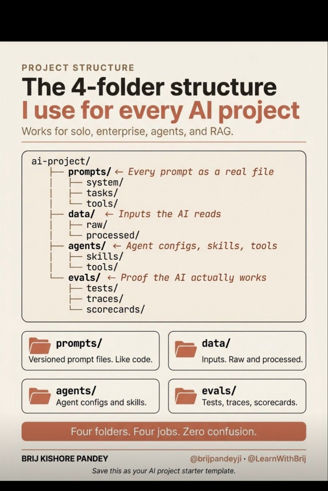
100 Claude Prompt Codes
PROMPTINGSingle-word modifiers that transform Claude's output instantly — grouped by category, ready to copy. 99% of users don't know these exist.
Google's Hidden AI Workflow
NEWSGemma 4 ships a full AI workflow most people haven't noticed. Breakdown of what Google quietly built and how to plug into it.
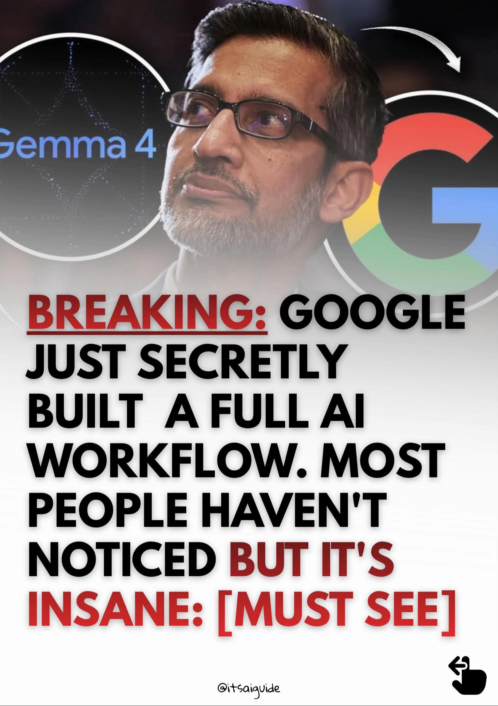
Claude for Excel: Full Setup
SETUP8-step guide to connecting Claude to Excel via AppSource — write formulas, analyze data, and get instant insights without leaving the sheet.
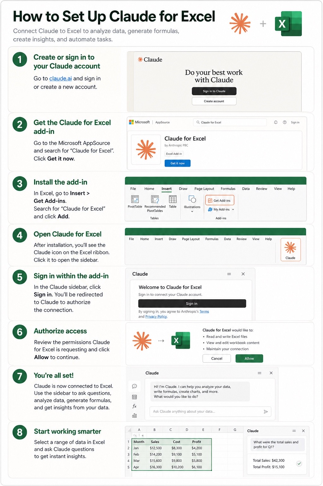
Claude: Full System Map
ADVANCEDChat vs Code vs Project vs Skills vs Cowork — what each mode is, when to use it, and the exact workflow diagram for each. Stop picking the wrong tool.
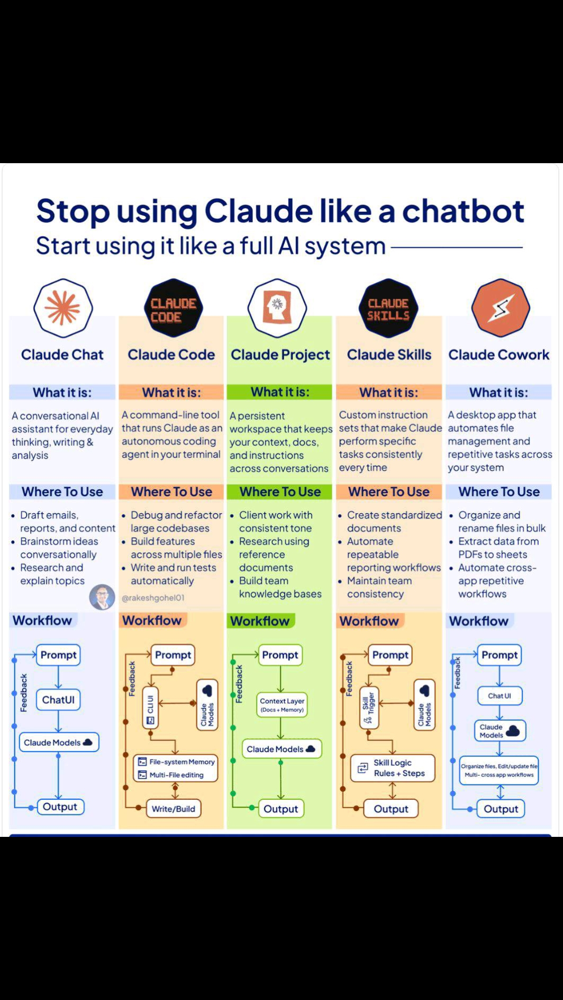
Use Claude Better Than 99%
WORKFLOWFull setup checklist: Cowork folder, 3 context files, global instructions. Stop prompting and start clicking — complete step-by-step.
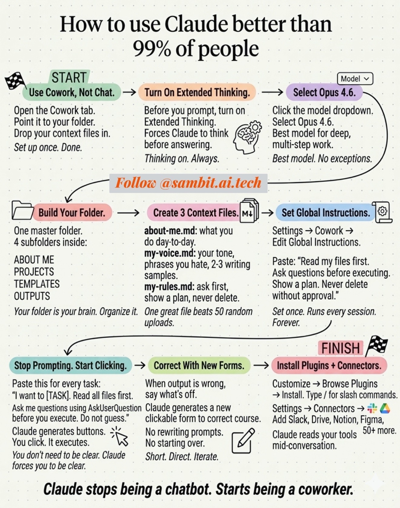
7 Smarter Prompts Than "Summarize"
PROMPTINGStop getting robotic notes. These 7 replacements make Claude actually think instead of compress — get insight, not a word count.
Ai Builder Jason
WORKFLOWTikTok slides from ai.builder.jason — edit this description.
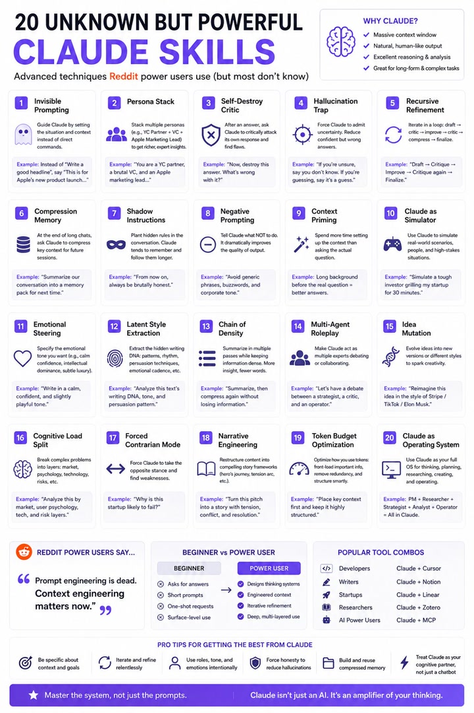
Aisimplified23
WORKFLOWTikTok slides from aisimplified23 — edit this description.
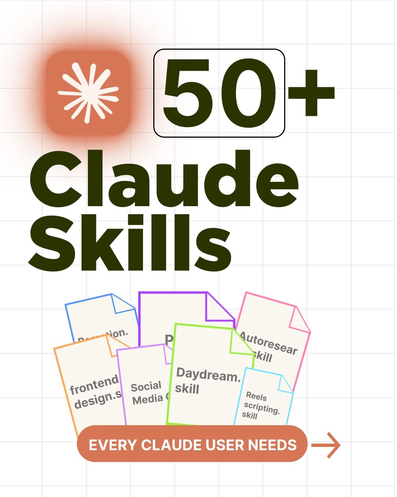
Code Debug
WORKFLOWTikTok slides from code_debug — edit this description.
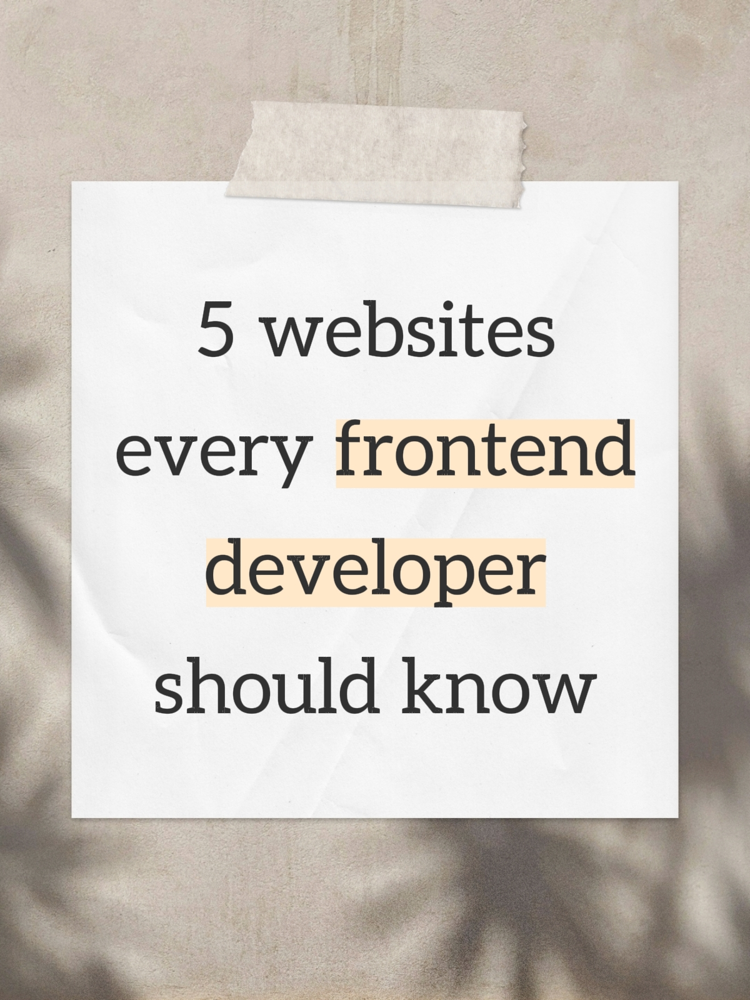
Itlandytech
WORKFLOWTikTok slides from itlandytech — edit this description.
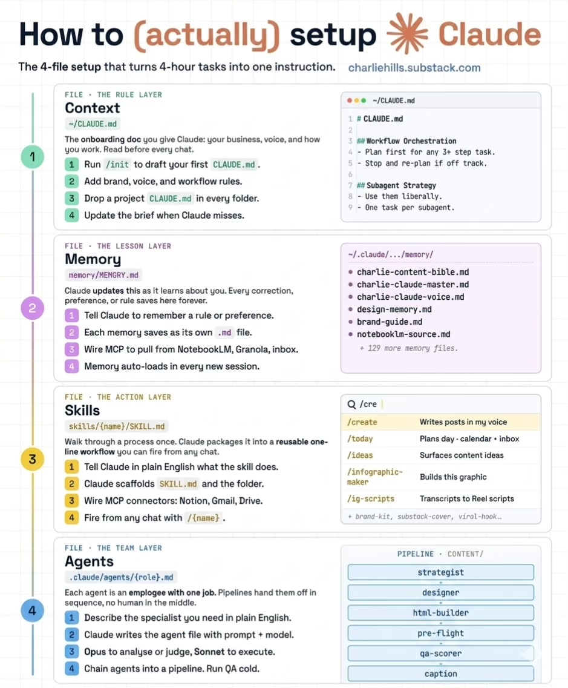
Martiendejong Dev
WORKFLOWTikTok slides from martiendejong_dev — edit this description.

Stackle Yourcareerlab
WORKFLOWTikTok slides from stackle_yourcareerlab — edit this description.
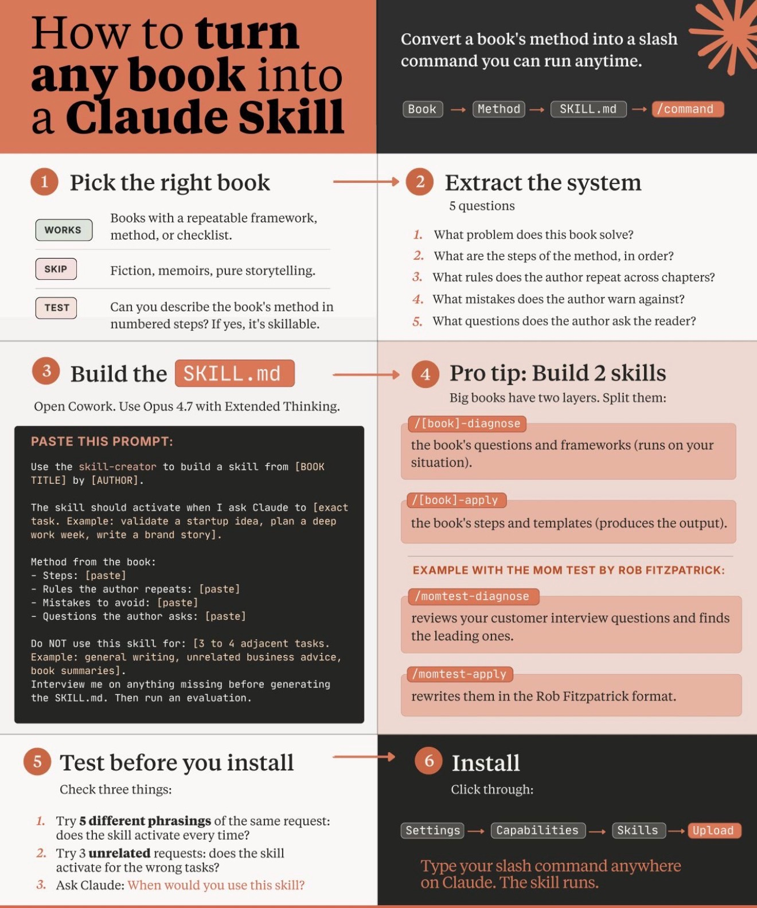
Stephthecoder
WORKFLOWTikTok slides from stephthecoder — edit this description.
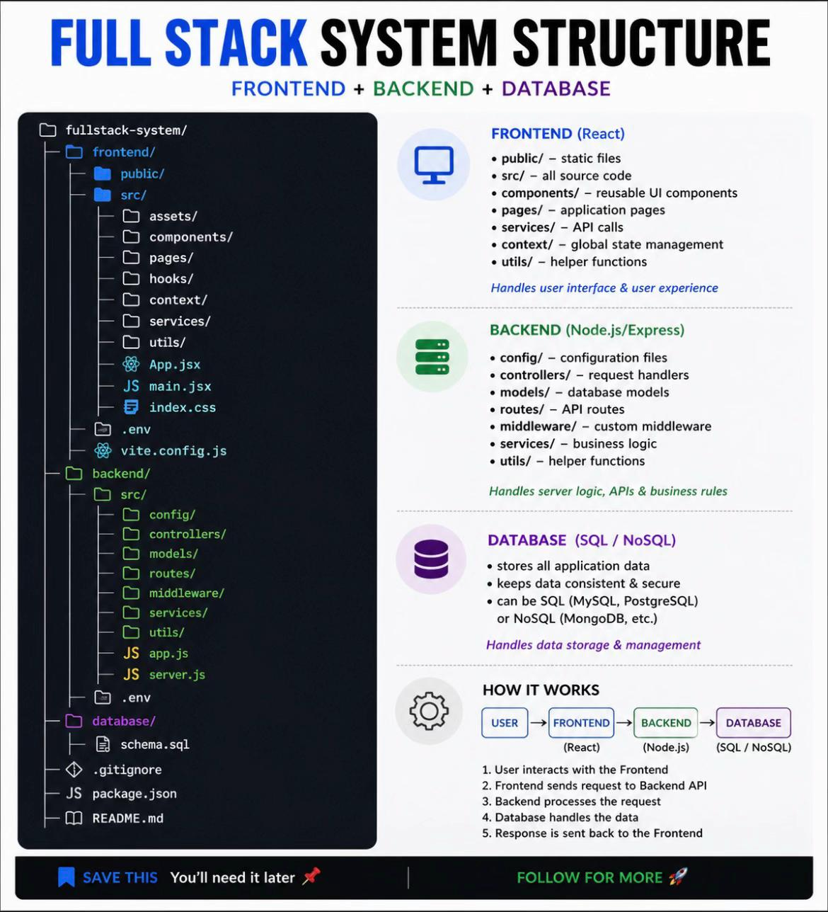
Deep Dives
Detailed explainers on Claude Code features worth actually understanding. Not surface-level — full mechanics.